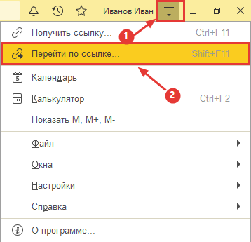
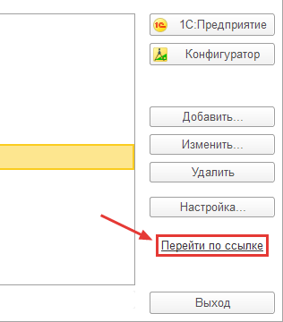

Навигационная ссылка - это адрес документа, элемента справочника или списка внутри 1С. Это как адрес сайта в браузере, только открывает его программа 1С. Ссылку можно вставить в 1С самому.
Если 1С уже открыта в нужной базе (сервер , база ):

Если 1С не открыта:

Признаки: по кнопке ничего не происходит или Windows предлагает «найти приложение в Microsoft Store».
Значит, ссылки e1c:// в Windows не привязаны к 1С. Регистрация делается один раз,
только для текущего пользователя.
Права администратора не нужны.
Способ 1. Скачайте e1c-register.reg, откройте его и подтвердите добавление в реестр. Chrome может предупредить о типе файла - нажмите «Сохранить».
Способ 2. Нажмите Win+R, введите cmd, вставьте команды и нажмите Enter:
reg add "HKCU\Software\Classes\e1c" /ve /d "URL:1C:Enterprise protocol" /f reg add "HKCU\Software\Classes\e1c" /v "URL Protocol" /d "" /f reg add "HKCU\Software\Classes\e1c\DefaultIcon" /ve /d "\"C:\Program Files\1cv8\common\1cestart.exe\",0" /f reg add "HKCU\Software\Classes\e1c\shell\open\command" /ve /d "\"C:\Program Files\1cv8\common\1cestart.exe\" /URL \"%1\"" /f
Путь C:\Program Files\1cv8\common\1cestart.exe - стандартный для 64-разрядной платформы.
Если 1С стоит в другом месте (например, C:\Program Files (x86)\1cv8\common), поправьте путь.
После регистрации вернитесь на эту вкладку и нажмите «Открыть в 1С».